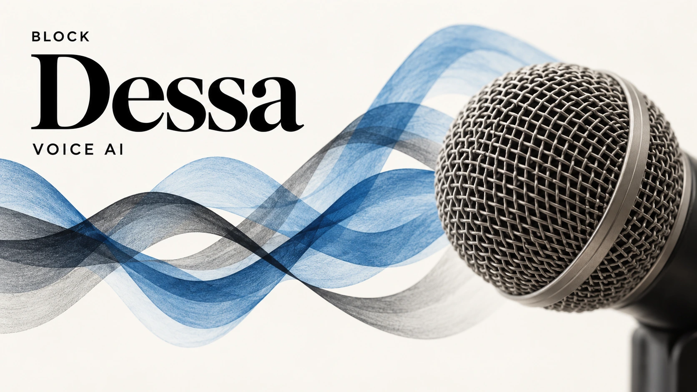

Block previews Dessa, a voice AI trained on speech rather than text
Block’s Dessa research preview explores conversation without text-based training. Outside testing and a public release remain separate hurdles.

Block introduced Dessa on October 23, a conversational AI research preview it says was trained on human speech without text or a pretrained model. The project explores learning conversation directly from audio. Its significance lies in that training approach, rather than simply answering aloud, which other voice systems already do.
Block says Dessa can listen while speaking, a capability called full-duplex. It has posted selected recordings and invited a small group of safety researchers to seek early access. The public page offers a waitlist. Those access terms distinguish the preview from a general consumer launch.
The distinction is in training, not just the microphone
The company says Dessa runs on an Apple MacBook Pro with an M4 Max chip or better, a claim rather than an independent benchmark. Ragavan Thurairatnam leads the team, which reports to Jack Dorsey. Block has not supplied public-product pricing or a general-release date.
Full-duplex speech itself has a research history. In its 2024 Moshi paper, French research laboratory Kyutai described a system that models the user’s speech and its own output in parallel. Moshi starts from a text language model and combines text and audio processing. That makes it a useful comparison: Dessa’s speech-only training claim should not be shortened into a claim that Block invented simultaneous listening and speaking.
Kyutai’s paper also explains a limitation of traditional voice pipelines: transcription can discard nonverbal information, while separate recognition, language-generation and speech-synthesis stages add delay. A response can contain the right words yet arrive at the wrong moment. A system that keeps speaking over a correction creates a different user problem from one that misunderstands vocabulary. These are practical design issues, not proof that any particular model has solved them.
Conversation quality needs tests beyond selected clips
For an independent evaluation, the important question would be how consistently Dessa handles interruptions across speakers, accents and background noise. A useful test would measure the delay between a person correcting an instruction and the model actually stopping or changing course. It should also distinguish a helpful acknowledgment from an interruption that prevents the person finishing. A polished sample alone cannot establish either result.
Expressive delivery creates a second evaluation task. A sympathetic tone can make an answer feel more trustworthy without making its factual content more reliable. Evaluators should score the correctness of an answer separately from naturalness, and check whether confidence in the voice matches uncertainty in the information. Emotional-sounding output should not be treated as evidence of feelings or a validated ability to understand a person’s mental state.
Those considerations connect to our analysis of work left for people after AI adoption. For a possible support application, a natural conversation is valuable only if the task is completed accurately, corrections are respected and a human can take over when needed. These are potential evaluation criteria, not an announced Dessa integration or a claim that Block has deployed the model in its financial products.
Local execution does not settle cost or privacy
The reported laptop capability opens a useful line of investigation into deployment economics. However, running a model locally does not by itself establish its total cost: hardware requirements, power use, simultaneous sessions and maintenance would all matter. Our guide to AI inference costs explains why a completed, usable task is a more meaningful unit than an isolated demonstration. There are no public measurements here that justify a numerical savings claim.
Likewise, a local model could reduce the need to send raw speech to a remote inference service, but the privacy of a future application would still depend on its recording, logging and retention settings. That distinction belongs alongside the access controls needed for enterprise AI. The next substantive milestone is outside testing that exposes failure rates and limitations, followed separately by clear access terms. The preview establishes an interesting research direction; it leaves those operating questions open.
Sources and methodology
Sources checked October 24, 2026. Reported findings and company or regulatory statements are attributed in the text; discussion of financial implications is editorial analysis. The generated cover is illustrative.